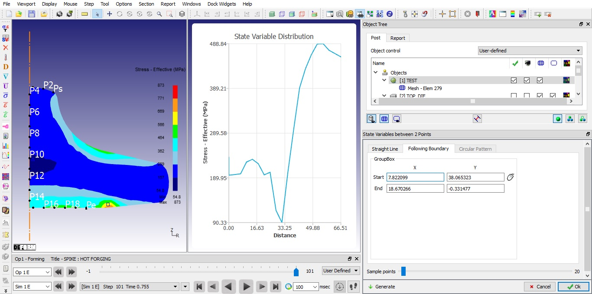
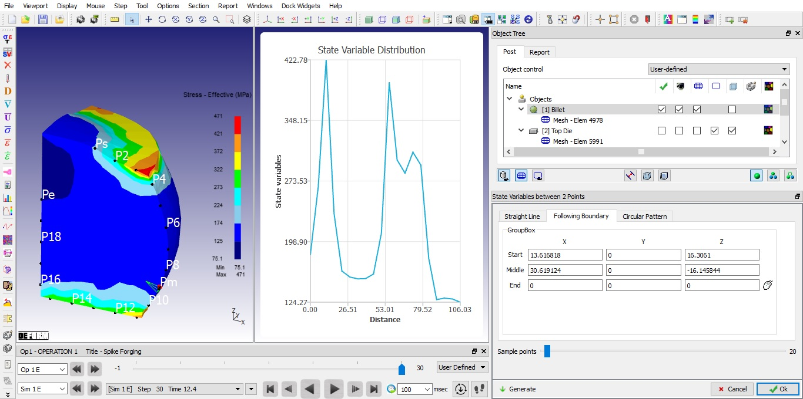
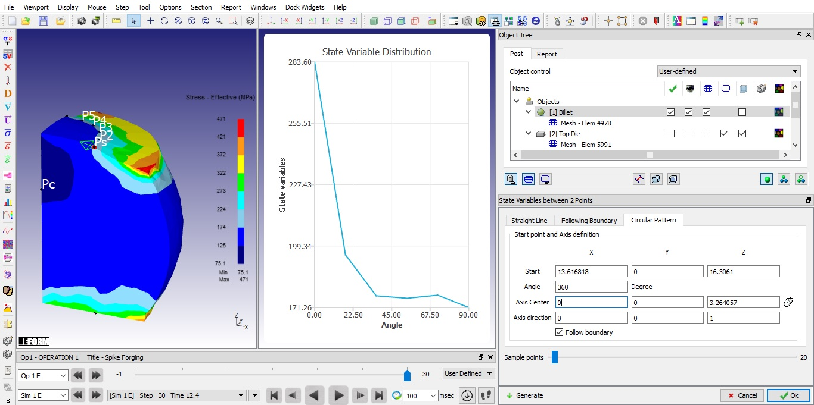

Straight Line [2D, 3D]: This feature allows the user to specify two points and to plot a given state variable distribution between those two points. The state variable distribution can be linearly interpolated
between the two points of the object. ( Fig. 26.6.8.1. and Fig. 26.6.8.2. and Fig. 26.6.8.3. )
Sampling points: Using this sliding bar user can control number of sample points.
Follow Object: By checking this check box, start and end of sampling points will follow the workpiece.
Area Distribution: By checking this check box, area covered by sampling points between start and end points on an object will be calculated.
Follow Boundary: By checking this check box, points will follow the object boundary.
Plot: By clicking on this  button it calculates the state variables and displays the graph.
button it calculates the state variables and displays the graph.
Band:
Procedure:
Step 1: Click on the SV distribution button in the Post-Processor.
Step 2: Select points to interpolate along a straight line.
Step 3: Pick two points on the object to interpolate.
Step 4: Click on  button.
button.
If no state variable is selected, only points will be shown. After a state variable is picked from the state variable window, clicking on the  utton
will show a graph of the distribution between the two points.(See Fig. 26.6.8.1. and
Fig. 26.6.8.2. and Fig. 26.6.8.3.)
utton
will show a graph of the distribution between the two points.(See Fig. 26.6.8.1. and
Fig. 26.6.8.2. and Fig. 26.6.8.3.)
Showing graph for SV distribution between 2 points for a straight line
Showing graph for SV distribution between 2 points for a straight line With Out area Distribution
Showing graph for SV distribution between 2 points for a straight line With area Distribution
Following Boundary [2D,3D] : This feature allows the user to specify points along the boundary of an object to plot a given state variable distribution between start and end points. (See Fig. 26.6.8.4. and Fig. 26.6.8.5..)
Procedure:
Step 1: Click on the SV distribution button in the Post-Processor.
Step 2: Select points to interpolate and to follow the boundary of the Object.
Step 3: For 2D Pick two points on the object to interpolate.
For 3D pick start, middle and End points on the object to interpolate
Step 4: Click on  button.
button.
If no state variable is selected, only points will be shown. After a state variable is picked from the state variable window, clicking on the  button will
show a graph of the distribution between the two points. (See Fig. 26.6.8.4. and Fig. 26.6.8.5.)
button will
show a graph of the distribution between the two points. (See Fig. 26.6.8.4. and Fig. 26.6.8.5.)

Showing graph for SV distribution between 2 points of following boundary for 2D

Showing graph for SV distribution between 2 points of following boundary for 3D
Circular pattern [3D] : This feature allows the user to define points in circular pattern by specifying point, axis and angle about which a given state variable distribution to be plotted. (See Fig. 26.6.8.6.)
Procedure:
Step 1:Click on the SV distribution button in the Post-Processor.
Step 2: Select Circular pattern tab.
Step 3: Pick point on the object to interpolate, define angle and axis direction.
Step 4: Click on the  button.
button.
Clicking on the  button will show a graph of the distribution between the two points.(See Fig. 26.6.8.6.)
button will show a graph of the distribution between the two points.(See Fig. 26.6.8.6.)

Showing graph for State variable distribution between 2 points for boundary circular